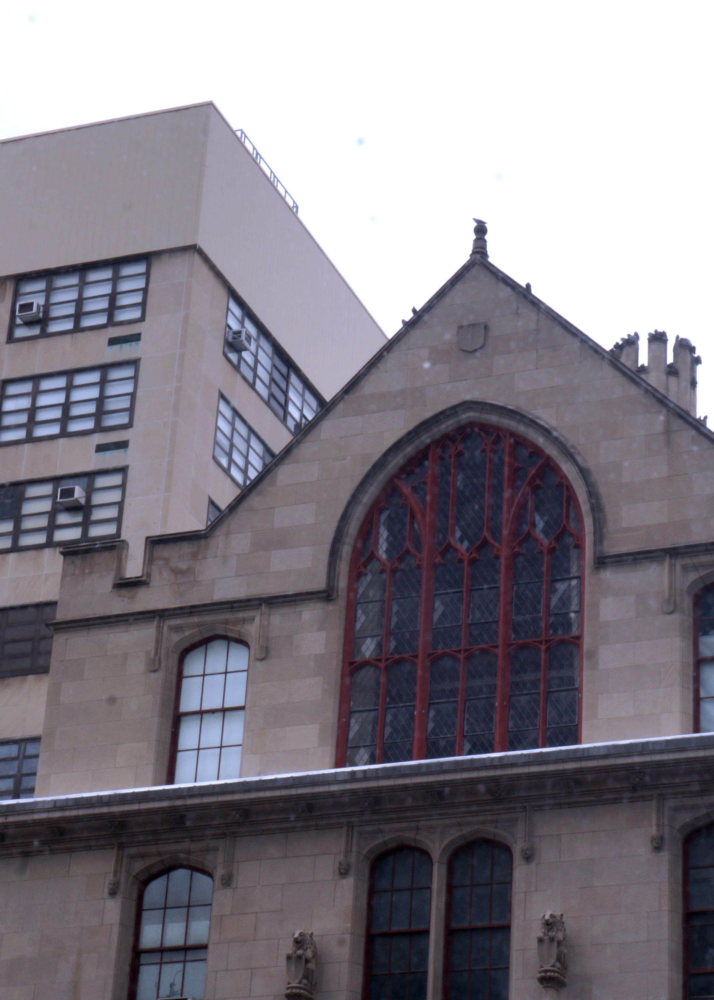

I always liked looking at the exterior of the Thomas Hunter Buuilding and I really wanted to capture part of it, along with the more "modern" North Building. It shows the contrast between the present and past. I had the Rule of Thirds in mind while I was taking this photo.
Rose Bench Image